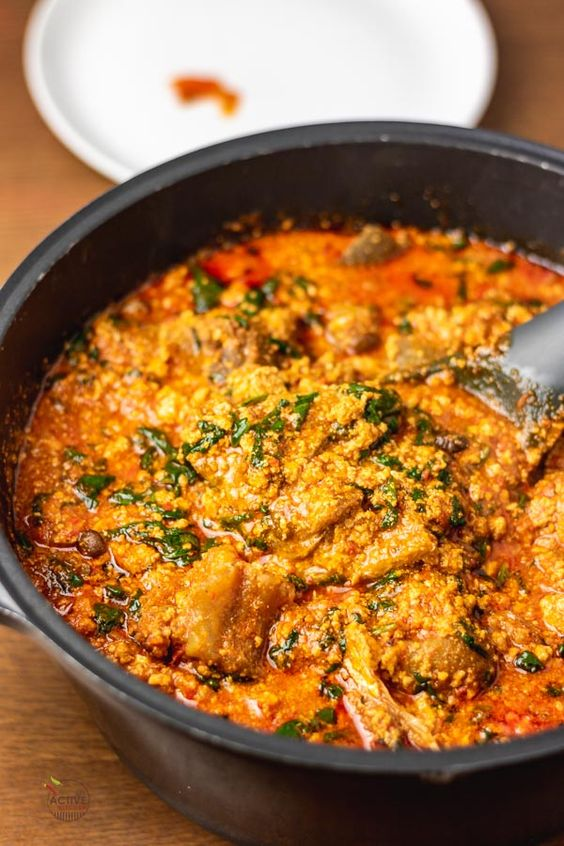

Ingredients
- Ground melon
- Smoked turkey
- Smoked mackerel
- Salt
- Beef stock cubes
- Nigerian pepper mix
- Dried prawns
- Iru woro or pete (locust beans) (or substitute with ogiri)
- Palm oil
- Spinach (baby spinach recommended)
Description
This Egusi soup recipe is insanely delicious and easy to make. Before you say I write this about all my recipes, I just want to confirm once again that this is true. I can tell you, this soup is the truth. It is simple and quick to make.
Recipe credit:
Steps
- Add ground melon to a bowl, add about a cup of water and mix to form a paste. Then set aside.
- Wash and chop the spinach, drain in a colander and set aside.
- Place a big pan on medium heat, add palm oil and heat for about 3 minutes (Do not bleach oil). Add the reserved chopped onions and sauté till translucent.
- Add pepper mix, locust beans and stir to combine. Bring to boil for 5 minutes.
- Add the egusi paste in bits to the pepper mixture, reduce the heat, do not stir and cover the pot with a lid. Cook for another 10 minutes.
- Remove the lid, and gently stir the soup. The egusi would be lumpy at this point, use the back of a ladle to break the lumps into desired size/texture.
- Add smoked turkey, ground crayfish, crayfish, beef stock (if using) and stir to combine. Add bouillon cubes, taste and adjust accordingly (I didn't add salt because the smoked turkey and mackerel already contain salt). Continue to cook for another 10 minutes, checking at intervals and stirring to avoid burning if needed.
- Add shredded smoked mackerel and gently stir into the soup.
- Add chopped spinach, stir to combine and cook for another 3 to 5 minutes.
- Take it off the heat, allow to cool for about 10 minutes before serving.
Notes
Substitute spinach for any other green leaves of choice
smoked turkey for beef or goat meat
Nutrition
Calories 158 ; Total Fat 14g grams ; Trans Fat ; Cholesterol 0mg milligrams ; Salt 0g grams.